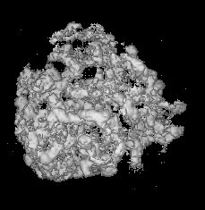

(Surface View)
(Surface View)

| .OPERATION: | FSC NEW [halfl],[sfl],[resl] | ; Fourier shell correlation and resolution |
| .FIRST INPUT VOLUME: | sav_fscvol_1 | ; First volume (input) |
| .SECOND INPUT VOLUME: | sav_fscvol_2 | ; Second volume (input) |
| .SHELL WIDTH (VOXEL UNITS): | 2 | ; Shell size (voxels) |
| .VOXEL SIZE (A): | 4 | ; Voxel size (A) |
| .INPUT MASK VOLUME: | sav_fsc_mask | ; Mask volume (input) |
| .FSC OUTPUT DOC FILE: | fscnew_doc | ; Doc file (output) |
| .GNUPLOT FILE: | fscnew_plot.gpl | ; Plot of FSC curve (output) |
| FIRST INPUT VOLUME (Surface View) | SECOND INPUT VOLUME (Surface View) | |
|---|---|---|
|  | |
| sav_fscvol_1 | sav_fscvol_2 |
| FIRST INPUT VOLUME (Surface View) | SECOND INPUT VOLUME (Surface View) | MASK VOLUME (Central Slice) | |
|---|---|---|---|
| |||
| fsc_vol1_surf | fsc_vol2_surf | sav_fsc_mask_mid .jpg |
| OUTPUT FSC DOC FILE (TRUNCATED) | OUTPUT FSC PLOT |
|---|---|
| fscnew_doc | fscnew_plot.gpl |